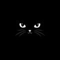

-

Kucing
X prev
 next
next
KUCING
Kucing adalah termasuk golongan mamalia. Kucing bisa hidup dengan berbaur bersama manusia dan juga bisa hidup secara liar. Kucing adalah hewan yang paling bersih, karena kucing sering membersihkan tubuhnya dengan di jilat-jilat. Saya mempunyai kucing berwarna oren yang sangat lucu, mata nya sangat bulat dan terlihat imut dengan bola mata berwarna coklat ke hijauan. Kupingnya sedikit panjang dan lebar, lalu mulutnya terlihat sedikit maju, mempunyai bulu yang sangat tebal, dan perutnya sangat gendut. Kucing saya sangat suka tidur di ubin, dengan pose tidur celentang dan kedua kaki atasnya di angkat, disaat ia tidur pasti mendengkur.
- Burung-Hantu
- Harimau
- Singa